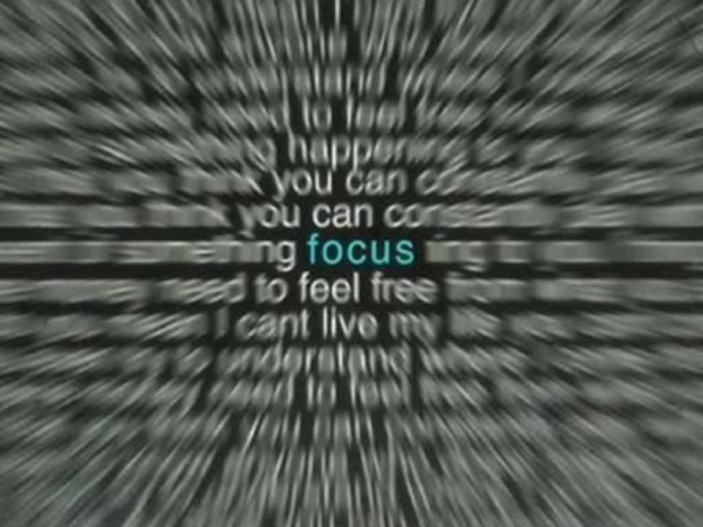

Focus on Studying.
First things first. What is focus, really? Experts define focus as the act of concentrating your interest or activity on something. That’s a somewhat boring definition, but there is an important insight hiding inside that definition.
Hitting the books or e-books can be tough, especially when your mind is racing in a dozen different directions. But the more you can concentrate on your work, the more time you’ll have to address all of your other obligations. For busy students, time management is key, and concentration is an integral component.

How to concentrate?
Remove distractions, including your phone, from your workspace. Write a to-do list offline or online such as in Microsoft To-Do List Athletes tend to have lower body mass indexes, but non-athlete participants will still benefit from developing muscles and burning calories. Active people tend to have lower rates of diabetes and high blood pressure.
Starve your distractions. Feed your focus.
Knowing where you are best able to concentrate is imperative to making the most of your time. If you need to be holed up at a desk in a quiet room, then make sure you have a dedicated study space and let your family or roommates know that you’re not to be disturbed.
Qualities
Focus can help us in the following ways:
- Increased Perseverence
- Increased Creativity
- Increased Concentration
- Increased Passion
- Getting close to success
- Better mental health
Rather than scramble to meet deadlines, set aside time in your weekly schedule to study. In the long run, you’ll get used to studying at a certain time each day, and avoid the unnecessary stress caused by cramming sessions or all-nighters.